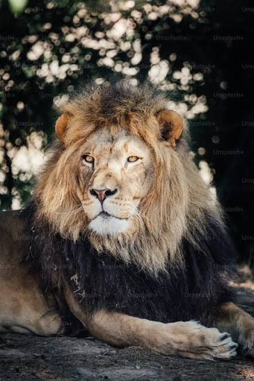

O leão (Panthera leo) é um dos maiores felinos do mundo, famoso por sua força e majestade. Juba Imponente: Apenas os machos possuem juba, usada para atrair fêmeas e demonstrar dominância. Animais Sociais: Diferente de outros felinos, vivem em bandos compostos por fêmeas parentes, filhotes e alguns machos protetores. Caça em Grupo: As leoas são as principais caçadoras do bando, atuando em equipe para capturar zebras, gnus e búfalos. Habitat: Vivem principalmente nas savanas da África subsahariana (com uma pequena população na Índia). Rugido Poderoso: Seu rugido serve para delimitar território e pode ser ouvido a até 8 km de distância.